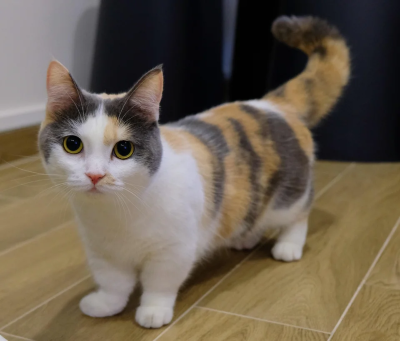
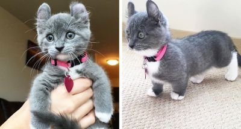

This is the offical site for the Club of Munchkins! The Club of Munchkins is a club with the sole purpose to talk about the Munchkin Cat breed. In this club we often share articles and content related to Munchkin Cats.

